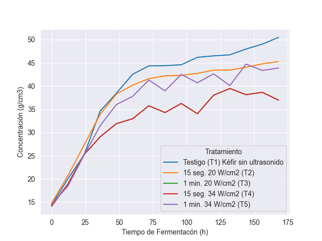

Fuente de datos#
El conjunto de datos proviene del trabajo de investigación Efecto del ultrasonido de intensidad alta y la fermentación sobre metabolitos específicos y propiedades funcionales del kéfir de agua [Y and Figueroa, 2025], en el cual se detalla el proceso experimental realizado con gránulos de kéfir de agua:
A una cantidad inicial de gránulos se le aplica un tratamiento de ultrasonido de intensidad y periodo de exposición definidos. Posteriormente, los gránulos se mantienen bajo condiciones controladas de temperatura y presión durante un periodo de 15 horas. Este proceso se repite hasta completarse en total un lapso de 175 horas en cuales se obtienen 15 puntos de medición. El dataset está compuesto por cinco series de tiempo, cada una conformada por 15 puntos equiespaciados. Cada serie representa el crecimiento de los gránulos asociado a un pretratamiento específico. En la siguiente figura se muestra una visualización de estas series, junto con una interpolación lineal entre los puntos medidos.
Los efectos que tiene el ultrasonido en el crecimiento de gránulos de kéfir es notorio al visualizar la serie de tiempo testigo ( sin tratamiento ) junto con las series con tratamiento . La serie de tiempo basal se nota que sigue el comportamiento esperado descrito en la literatura acerca de ello, es decir, sigue un modelo logístico simple. A cambio, las series con mayor intensidad de ultrasonido parecen oscilar en vez de estabilizarse dentro del periodo de saturación . Esto implica una dinámica desconocida introducida por el tratamiento.
Para lograr encontrar esta dinámica oculta, primero tenemos que partir de la ya conocida. Por ello, describiremos brevemente la formulación básica detrás de los modelos poblacionales que se utilizan para describir el crecimiento microbiano.
{kind=link}
